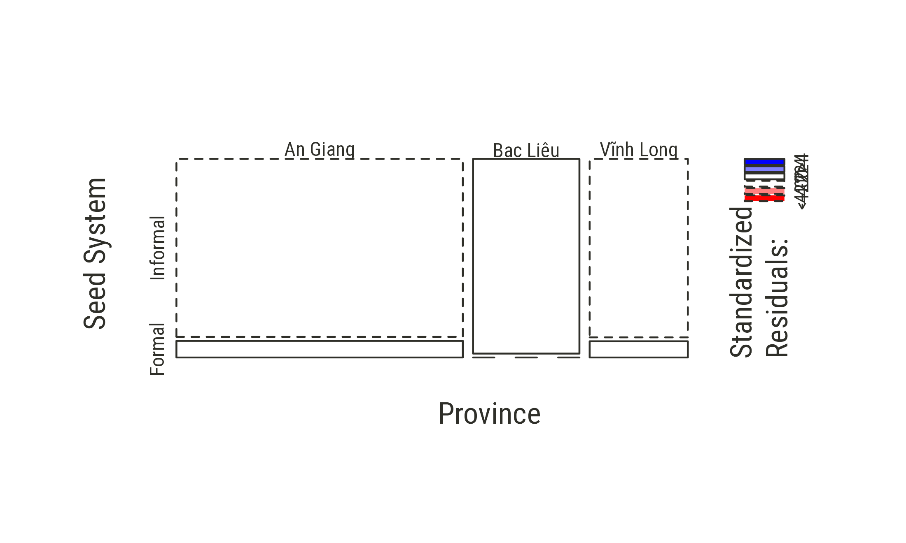
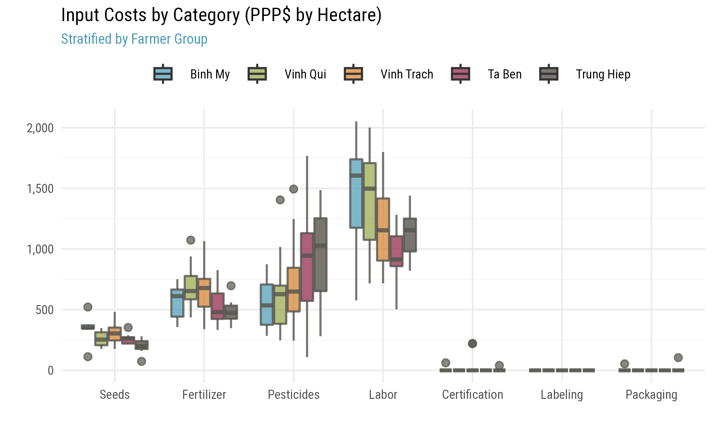
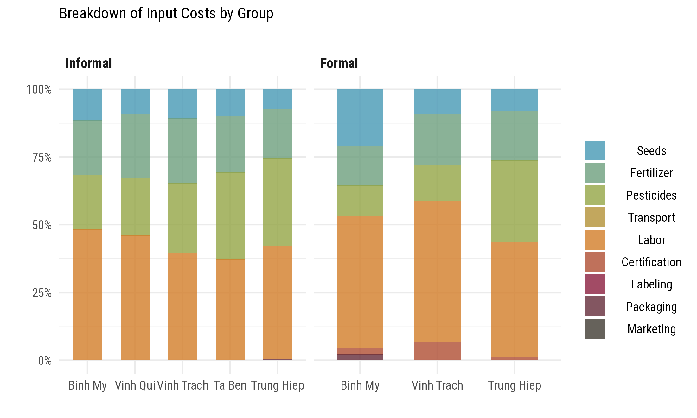
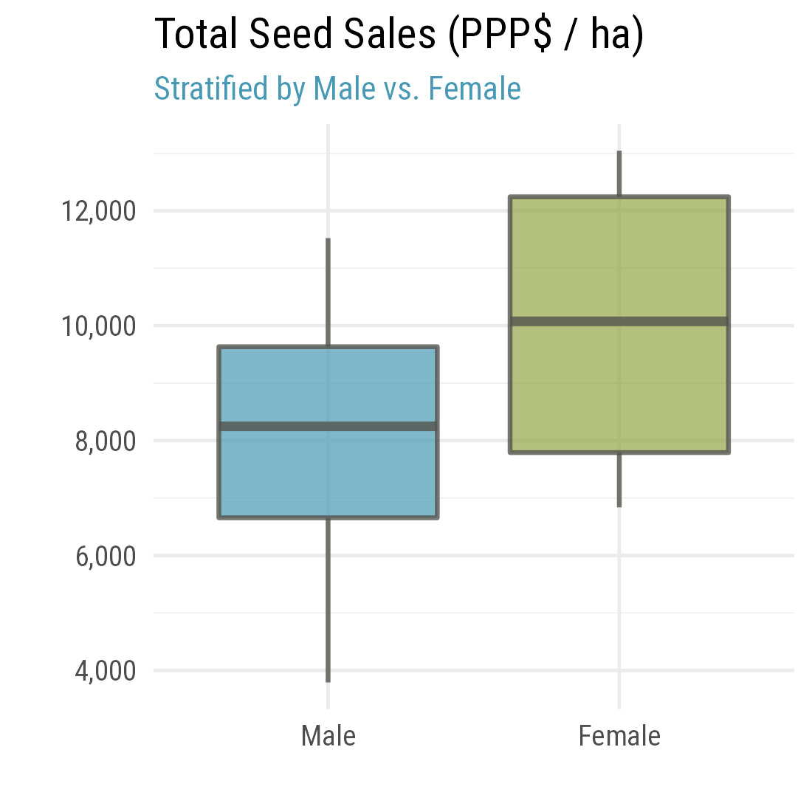

Vietnam
Field work in Vietnam consisted of a qualitative assessment with focus group discussions and quantitative surveys. We first look at the consolidated survey results.
Notes:
- 1 Int’l $ = 7,473.67 VND (Vietnamese Dong) using 2020 World Bank PPP conversion rates (1 Int’l $ = 1 USD)
- Focus crop = rice
- Transportation costs are lumped into the cost of pesticides, fertilizers and harvesting.
- Labor costs are per hectare
- Inspection and certification fees are per farm (total fees for a single season). Only farmers who sell to seed centers or seed companies do incur these marketing costs.
Survey Codebook
xrate = 7473.67
# Load respondent data
hh <- fread("../data/vnm/hh.csv")
# Load group data
group <- fread("../data/vnm/group.csv")
# Load final codebook
lbl <- fread("../data/vnm/codebook.csv")There are 21 variables and 60 observations in this set. A detailed codebook is shown below.
kable(align="llccc", caption="Survey Codebook", lbl) %>%
kable_def()| code | label | type | unit | constructed |
|---|---|---|---|---|
| hhid | Code | character | uid | FALSE |
| age | Age | numeric | years | FALSE |
| gender | Sex | character | class | FALSE |
| group | Group | character | class | FALSE |
| adm1_nm | Province | character | class | FALSE |
| member_years | How long have you been a member of this group? | numeric | years | FALSE |
| seed_ha_lcu | Cost seed per ha (VND) | numeric | lcu/ha | FALSE |
| fert_ha_lcu | Cost of fertilizer per ha (VND) | numeric | lcu/ha | FALSE |
| pest_ha_lcu | Cost of pesticide per ha (VND) | numeric | lcu/ha | FALSE |
| tran_ha_lcu | Cost of transport per ha (VND) | logical | lcu/ha | FALSE |
| labor_ha_lcu | Labor cost (VND) | numeric | lcu/ha | FALSE |
| cert_lcu | Inspection / certification Fees (VND) | numeric | lcu/farm/season | FALSE |
| labl_kg_lcu | Labelling costs per kg (VND) | numeric | lcu/kg | FALSE |
| pckg_kg_lcu | Packaging costs per kg (VND) | numeric | lcu/kg | FALSE |
| mark_kg_lcu | Other marketing costs? (VND) | numeric | lcu/kg | FALSE |
| yield_ha_kg | Estimated Yield (kg/ha) | numeric | kg/ha | FALSE |
| sales_kg_lcu | Selling price of seed per kg (VND) | numeric | lcu/kg | FALSE |
| sales_ha_kg | How many kg were sold in the season? | numeric | kg/ha | FALSE |
| margin_exp_ha_sh | What was your expected gross margin? | numeric | lcu/ha | FALSE |
| costs_ha_lcu | Total production cost | numeric | lcu/ha | FALSE |
| sales_ha_lcu | Gross sales | numeric | lcu/ha | FALSE |
| margin_ha_lcu | Gross margin | numeric | lcu/ha | TRUE |
| tfp | Total factor productivity | numeric | kg/lcu | TRUE |
| ssd | Farmer participates in formal seed system distribution | logical | true/false | TRUE |
| group_year | Year the group was established | integer | year | TRUE |
| group_size | Members in the group | integer | members | TRUE |
| soil_type | Primary soil type | character | class | TRUE |
| seasons | Number of seasons per year | integer | seasons/year | TRUE |
| irrigated | Level of irrigation | character | class | TRUE |
| market_access | Market access | character | class | TRUE |
| ttrade | Presence of transboundary trade | logical | true/false | TRUE |
| costs_ha_lcu_imp | Total costs (imputed) | numeric | lcu/ha | TRUE |
| sales_ha_sh | Gross sales as share of tpc | numeric | share | TRUE |
| sales_ha_ppp | Gross sales in PPP equivalent | numeric | ppp/ha | TRUE |
| margin_ha_sh | Margin as share of tpc | numeric | share | TRUE |
| margin_ha_ppp | Margin in PPP equivalent | numeric | ppp/ha | TRUE |
Recode variable names.
setnames(hh, lbl$label, lbl$code, skip_absent=T)Additional recodes for categorical variables. Note that we create a categorical variable ssd to indicate whether a farmer currently engages in formal seed system distribution.
setorder(hh, adm1_nm, group, gender)
hh[, `:=`(
hhid = paste("VNM", gsub(" ", "0", format(1:.N, width=3)), sep=""),
iso3 = "VNM",
adm1_nm = factor(adm1_nm),
group = factor(group, levels=hh[, unique(group)]),
gender = factor(gender, labels=c(Nam="Male", Nữ="Female")),
ssd = factor(cert_lcu > 0, labels=c("Informal", "Formal"))
)]Data Enrichment
Below we append some of the information that was recorded at the group level.
kbl(group, align="lccccccc") %>%
kable_def()| Group | Established | Members | Soil | Seasons | Irrigation | Market access | Transboundary trade |
|---|---|---|---|---|---|---|---|
| Ta Ben | 2001 | 30 | loamy | 2.0 | good | Vicinity to local market, good road to infrastructure | No |
| Trung Hiep | 2003 | 8 | sandy-silty | 2.5 | good | Vicinity to local market, good road to infrastructure | No |
| Vinh Trach | 2004 | 15 | clay | 3.0 | good | Vicinity to local market, good road to infrastructure | Yes |
| Binh My | 2004 | 8 | clay | 3.0 | good | Vicinity to local market, good road to infrastructure | Yes |
| Vinh Qui | 2002 | 40 | clay | 3.0 | good | Vicinity to local market, good road to infrastructure | Yes |
# Merge
hh[group, on=.(group=Group), `:=`(
group_year = `Established`,
group_size = `Members`,
soil_type = `Soil`,
seasons = `Seasons`,
irrigated = `Irrigation`,
market_access = `Market access`,
ttrade = `Transboundary trade`
)]Spatial Covariates
Using community GPS coordinates we also suggest to enrich this dataset with additional biophysical and geospatial variables, e.g.:
- Agroecological zone
- Travel time to nearest market
- Distance to nearest seed center / company
- Size of nearest seed center / company
- Population density
- Last season total rainfall
- Last season heat stress days (if any)
[pending GPS coordinates]
Constructed Variables
We check farmer-reported total costs costs_ha_lcu against the sum of individual cost line items.
hh[,
tran_ha_lcu := as.numeric(tran_ha_lcu)
][,
tran_ha_lcu := fifelse(is.na(tran_ha_lcu), 0, tran_ha_lcu)
][, costs_ha_lcu_imp :=
# Per ha costs
seed_ha_lcu + fert_ha_lcu + pest_ha_lcu + tran_ha_lcu + labor_ha_lcu + cert_lcu +
# Per kg costs
yield_ha_kg * (labl_kg_lcu + pckg_kg_lcu + mark_kg_lcu)]
hh[, summary(costs_ha_lcu_imp - costs_ha_lcu)]## Min. 1st Qu. Median Mean 3rd Qu. Max.
## 0 0 0 0 0 0There is no discrepancy between the 2 quantities, so we can assume that total costs are constructed per the formula above. No error was found.
We also check that farmer-reported sales and profit margins are consistent.
hh[, summary(sales_ha_lcu - (sales_kg_lcu * sales_ha_kg))]## Min. 1st Qu. Median Mean 3rd Qu. Max.
## 0 0 0 0 0 0Further we construct gross margin per ha margin_ha_lcu, total sales sales_ha_sh and profit margin margin_ha_sh per unit of (variable) input costs, and costs_ha_ppp, sales_ha_ppp and margin_ha_ppp in PPP terms to allow for comparisons across groups and countries.
We also construct a measure of total factor productivity tfp as output per unit of input costs. Strictly speaking it is only “partial factor productivity” here because we don’t include the rental cost of land, land preparation costs, irrigation costs, and the costs of animal and mechanical implements.
hh[, `:=`(
margin_ha_lcu = sales_ha_lcu - costs_ha_lcu
)][, `:=`(
sales_ha_sh = sales_ha_lcu / costs_ha_lcu,
margin_ha_sh = margin_ha_lcu / costs_ha_lcu,
costs_ha_ppp = costs_ha_lcu / xrate,
sales_ha_ppp = sales_ha_lcu / xrate,
margin_ha_ppp = margin_ha_lcu / xrate
)][, `:=`(
tfp = yield_ha_kg / costs_ha_ppp
)]Finally we normalize all farmer cost line items into a “long” table hh_prod_cost for charting.
# Normalize production cost table
hh_prod_cost <- hh[, .(hhid,
Seeds = seed_ha_lcu,
Fertilizer = fert_ha_lcu,
Pesticides = pest_ha_lcu,
Transport = tran_ha_lcu,
Labor = labor_ha_lcu,
Certification = cert_lcu,
Labeling = yield_ha_kg * labl_kg_lcu,
Packaging = yield_ha_kg * pckg_kg_lcu,
Marketing = yield_ha_kg * mark_kg_lcu
)]
hh_prod_cost <- melt(hh_prod_cost, id.vars=1, value.name="lcu", variable.name="category")
hh_prod_cost[hh, on=.(hhid), `:=`(
# Add categories
group = i.group,
gender = i.gender,
ssd = i.ssd
)][, `:=`(
# Add shares and PPP terms
share = lcu/sum(lcu, na.rm=T),
ppp = lcu/xrate
), by=.(hhid)]Note that in the current survey we are missing farm sizes (or planted acreage), so we can not directly study the effect of farm size on the per-unit costs of production and yields, or look at potential scale effects on a farmer’s efficiency and profitability. We can however study whether larger groups might have positive effects.
Descriptive Statistics
Respondent Characteristics
First a breakdown by group.
library(ggalluvial)
ggplot(
hh[, .N, by=.(adm1_nm, group, ssd, gender)],
aes(axis1=adm1_nm, axis2=gender, axis3=ssd, y=N)) +
geom_alluvium(aes(fill=group), width=1/4) +
geom_stratum(width=1/4) +
geom_text(stat="stratum", aes(label=after_stat(stratum)), angle=90, size=2.2) +
scale_x_discrete(limits=c("Province", "Gender", "Seed Distribution")) +
labs(y=NULL, fill="Seed Group",
title = "Survey Respondents (Vietnam)",
subtitle = "Stratified by demographics and group membership (N = 60)") +
theme_def(axis.text=element_text(face="bold"))
Showing contingency tables between each pair of categorical variables (seed group, gender, and a farmer’s use of formal seed system distribution).
library(sjPlot)
sjtab(hh[, .(group, gender)], fun="xtab", var.labels=c("Group", "Gender"),
show.row.prc=T, show.col.prc=T, show.summary=T, show.exp=T, show.legend=T)| Group | Gender | Total | |
|---|---|---|---|
| Male | Female | ||
| Binh My |
7 6 100 % 14.6 % |
0 1 0 % 0 % |
7 7 100 % 11.7 % |
| Vinh Qui |
10 8 100 % 20.8 % |
0 2 0 % 0 % |
10 10 100 % 16.7 % |
| Vinh Trach |
17 14 94.4 % 35.4 % |
1 4 5.6 % 8.3 % |
18 18 100 % 30 % |
| Ta Ben |
10 10 76.9 % 20.8 % |
3 3 23.1 % 25 % |
13 13 100 % 21.7 % |
| Trung Hiep |
4 10 33.3 % 8.3 % |
8 2 66.7 % 66.7 % |
12 12 100 % 20 % |
| Total |
48 48 80 % 100 % |
12 12 20 % 100 % |
60 60 100 % 100 % |
χ2=23.007 · df=4 · Cramer’s V=0.619 · Fisher’s p=0.000 |
observed values
expected values
% within Group
% within Gender
sjtab(hh[, .(gender, ssd)], fun="xtab", var.labels=c("Gender", "Seed System"),
show.row.prc=T, show.col.prc=T, show.summary=T, show.exp=T, show.legend=T)| Gender | Seed System | Total | |
|---|---|---|---|
| Informal | Formal | ||
| Male |
45 45 93.8 % 80.4 % |
3 3 6.2 % 75 % |
48 48 100 % 80 % |
| Female |
11 11 91.7 % 19.6 % |
1 1 8.3 % 25 % |
12 12 100 % 20 % |
| Total |
56 56 93.3 % 100 % |
4 4 6.7 % 100 % |
60 60 100 % 100 % |
χ2=0.000 · df=1 · φ=0.033 · Fisher’s p=1.000 |
observed values
expected values
% within Gender
% within Seed System
In the 1st table Chi-square test and p-value < 0 shows that gender and group membership are not independent. In the 2nd table with a Chi-square at zero and a small Cramér’s V (0.033) the variables can be assumed dependent, but that relationship is not significant, as shown also on the mosaic plot below.
mosaicplot(~gender+ssd, hh, shade=T,
main = NA,
xlab="Gender", ylab="Seed System")mosaicplot(~adm1_nm+ssd, hh, shade=T,
main = NA,
xlab="Province", ylab="Seed System")
NB. blue means there are more observations in the cell than would be expected under the null model (independence). Red means there are fewer observations than would have been expected.
Seed Production Costs
We first look at the general breakdown and distribution of input costs within and across farmer groups.
tbl <- hh_prod_cost[, .(
share = mean(share, na.rm=T)
), keyby=.(gender, ssd, category)]
ggplot(tbl, aes(gender, share, fill=category)) +
geom_bar(stat="identity", alpha=.8, width=.6) +
scale_y_continuous(labels=percent) +
scale_fill_manual("", values=colorRampPalette(pal)(9)) +
facet_wrap(~ssd) +
labs(y="", x="",
title="Breakdown of Input Costs by Gender",
subtitle="") +
theme_def()
tbl <- hh_prod_cost[, .(
share = mean(share, na.rm=T)
), keyby=.(group, ssd, category)]
ggplot(tbl, aes(group, share, fill=category)) +
geom_bar(stat="identity", alpha=.8, width=.6) +
scale_y_continuous(labels=percent) +
scale_fill_manual("", values=colorRampPalette(pal)(9)) +
facet_wrap(~ssd) +
labs(y="", x="",
title="Breakdown of Input Costs by Group",
subtitle="") +
theme_def()
Are there significant differences across groups?
ggplot(hh_prod_cost, aes(category, ppp, fill=gender)) +
geom_boxplot(alpha=.7) +
scale_y_continuous(labels=comma) +
labs(x="", y="", fill="",
title="Input Costs by Category (PPP$ by Hectare)",
subtitle="Male vs. Female") +
theme_def(legend.position="bottom")
ggplot(hh_prod_cost, aes(category, ppp, fill=group)) +
geom_boxplot(alpha=.7) +
scale_y_continuous(labels=comma) +
labs(x="", y="", fill="",
title="Input Costs by Category (PPP$ by Hectare)",
subtitle="Stratified by Group") +
theme_def(legend.position="bottom")
Efficiency
Profitability
ggplot(hh, aes(x=1:nrow(hh), color=group)) +
geom_linerange(aes(ymin=costs_ha_ppp, ymax=sales_ha_ppp), size=.6) +
geom_point(aes(y=costs_ha_ppp)) +
geom_point(aes(y=sales_ha_ppp), shape=18, size=2) +
scale_y_continuous(labels=comma) +
labs(x=NULL, y=NULL,
title="Profit Margin (PPP$ per Hectare)",
subtitle="Each bar is a respondent") +
theme_def(legend.position="right")
ggplot(hh, aes(x=sales_ha_ppp-costs_ha_ppp, fill=group)) +
geom_histogram(color="white") +
scale_x_continuous(labels=comma) +
facet_wrap("group") +
labs(x=NULL, y=NULL,
title="Profit Margin (PPP$ per Hectare)",
subtitle="Each bar is a respondent") +
theme_def()
rm(tmp, x, y, i)
save.image("../tmp/data_vnm.RData")